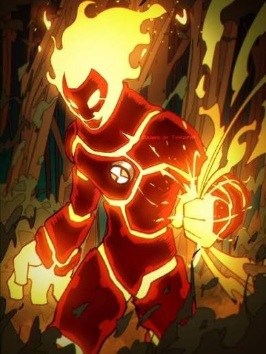

Chama

Voltar
Descrição do Alien Chama
O Chama é um alienígena humanoide baseado em plasma e magma da espécie Pyronita,
nativo do planeta/estrela Pyros, e foi a primeira transformação de Ben Tennyson na franquia Ben 10.